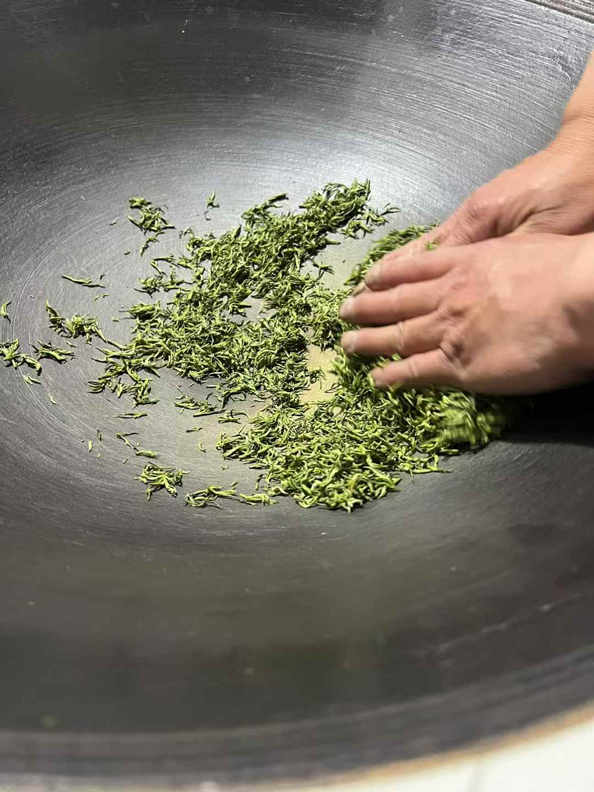
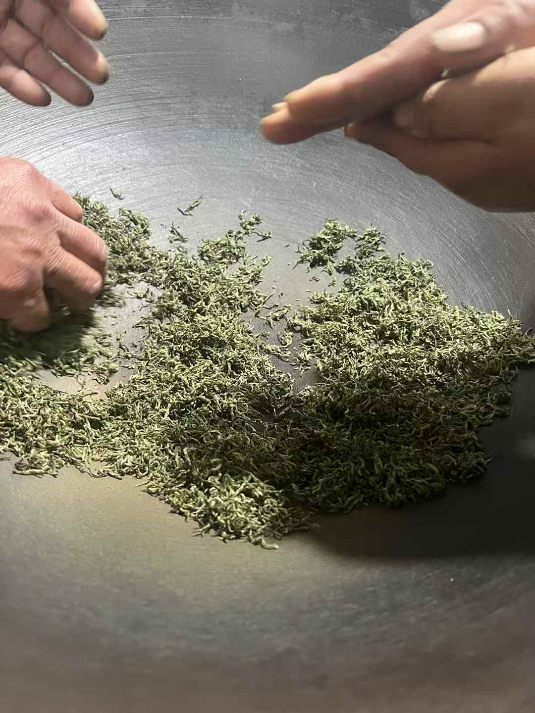
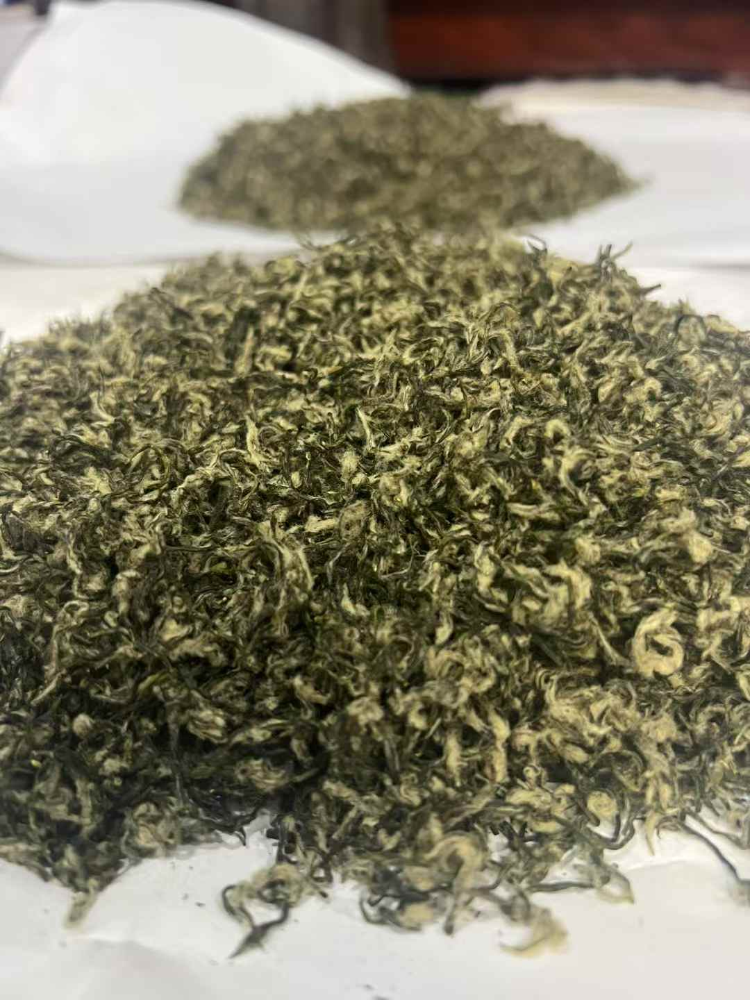

探寻中国十大名茶之一的非遗制作技艺
碧螺春采摘有三大特点：摘得早、采得嫩、拣得净。通常在春分前后开采，只采摘初展的一芽一叶。
在平底锅中高温翻炒，破坏酶的活性，阻止茶叶红变，同时挥发掉水分，散发青草气，激发茶香。

锅温降低后，边炒边揉，使茶条逐渐卷缩成条，茶汁溢出附着在表面，为后续的醇厚口感打下基础。

这是碧螺春成型的关键工序。边炒边用手搓成团，使茶叶卷曲成螺，白毫显露，这也是"碧螺春"名字的由来。

采用轻揉、轻炒的方式将茶叶水分烘干至足干，固定形状，提速香气，最终形成"铜丝条，螺旋形，浑身毛"的特质。
点击任意位置关闭